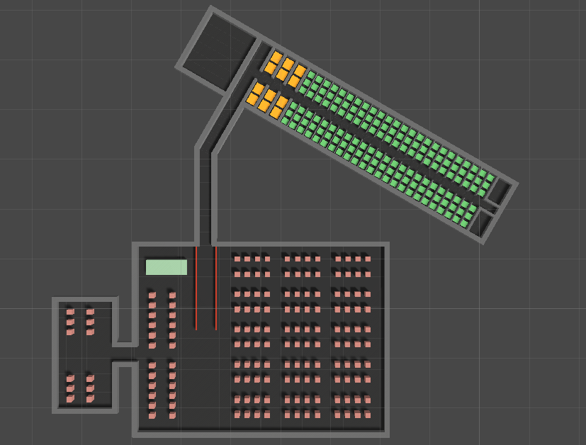
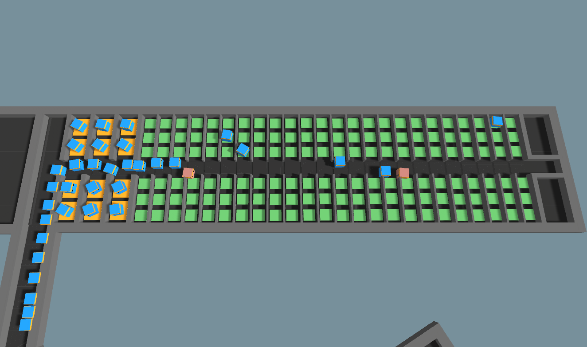

With advancements in agent-based modeling and multi-agent systems in the past decade, complex agent interactions and crowd modeling have produced realistic simulations of crowd movement within an environment.
These simulations have become increasingly important in the game development field and for crowd flow analysis, where the goal is to simulate crowd behavior under different environments such as emergency evacuations.
Many previous works have explored various components of crowd modeling such as collision avoidance, individual agent personalities, and lane formation. We plan to apply these ideas in the scope of multi-agent aircraft boarding simulation.
While some works have explored optimal methods for aircraft boarding, to our knowledge, none have modeled aircraft boarding with multi-agent physical simulations.
In our physical plane boarding simulation, we have incorporated various crowd simulation ideas, such as collision avoidance and queue formation, to the multi-agent simulation of aircraft boarding.
Using this physical setting, we have tested various boarding methods such as random, front-to-back, back-to-front, window-middle-aisle, Steffen's perfect, and Steffen's modified.
After simulating these boarding methods for 20 epochs each, we found verify earlier works by showing that Steffen's perfect and Steffen's modified was able to consistently board the passengers the fastest.
In addition, our physical simulations also support past numerical simulations by showing that the front-to-back boarding method performed far worse than the other boarding methods.
Lastly, we discuss the results based on our observations of the simulated agents' behaviors and tendencies.
(Top Left Dropdown) - Choose whether to view the entire environment, only the airport, or only the airplane.
(Middle Right Dropdown) - Choose the plane boarding method to simulate.
Min Stowage Time - Minimum time a passenger will spend stowing their luggage.
Max Stowage Time - Maximum time a passenger will spend stowing their luggage.
Num Rows to Board (Only applies to front-to-back and back-to-front) - Chooses how many rows to call up at once.
Wait Time - How much time to wait between calling each passenger (scaled to the number of passengers).
Simulation Speed - Time scale to run the simulation (5 is a good speed, set speed to 1 for a true plane boarding experience).
Number of Trials - How many times to run the selected boarding method.
Project Images:

The airport and airplane environment of our simulation

Queuing behavior of passenger agents.